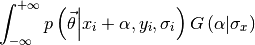

Fitting routines¶
For all methods, the underlying package LMFIT handles the parabolic error calculations and passes along the optimization assignment to SciPy.
Chisquare method¶
When fitting with the chisquare method, the costfunction to be minimized is

with the subscript i referring to the datapoint, and HFS to the response of the HFSModel class. The algorithm used is the Levenberg-Marquardt algorithm, which gives quick results in a reliable fashion. The fitting.chisquare_model function creates the costfunction used for counting data. The function fitting.chisquare_fit performs the actual fit, while fitting.chisquare_spectroscopic_fit calculates the uncertainty on the data by taking the square root of the number of counts.
Note
One of the options for fitting.chisquare_model is the boolean pearson. If this boolean is True, the uncertainty is calculated by taking the square root of the fitvalue, not the datapoint. This approach mimics the use of the Poisson distribution instead of the Gaussian distribution for the uncertainty calculation.
In order to demonstrate the fit functions, toy data is needed. This is created by assuming some parameters for the basemodel, calculating the response, and then adding random noise.
import satlas as s
import numpy as np
np.random.seed(0) #Ensure the same random numbers each time
I = 1.0
J = [1.0, 2.0]
ABC = [100, 200, 100, 200, 0, 0]
fwhm = [10, 10]
centroid = 500
scale = 100
basemodel = s.HFSModel(I, J, ABC, centroid, fwhm=fwhm, scale=scale, background=10)
frequency_range = (min(basemodel.locations) - 100, max(basemodel.locations) + 100)
frequency_range = np.linspace(frequency_range[0], frequency_range[1], 200)
data = basemodel(frequency_range) + basemodel(frequency_range)**0.5 * np.random.randn(len(frequency_range))
success, message = s.chisquare_spectroscopic_fit(basemodel, frequency_range, data)
print(success)
print(message)
basemodel.display_chisquare_fit(show_correl=False)
This gives as output:
True
Tolerance seems to be too small.
Scaled errors estimated from covariance matrix.
NDoF: 191, Chisquare: 191.69717, Reduced Chisquare: 1.0036501
[[Variables]]
FWHMG: 11.3427266 +/- 2.140752 (18.87%) (init= 10)
FWHML: 8.43978693 +/- 1.852357 (21.95%) (init= 10)
TotalFWHM: 16.5154873 +/- 1.082126 (6.55%) == '0.5346*FWHML+sqrt(0.2166*FWHML**2+FWHMG**2)'
scale: 97.1175807 +/- 5.290111 (5.45%) (init= 100)
Amp0__1: 0.2380952 (fixed)
Amp1__1: 0.1785714 (fixed)
Amp1__2: 0.5357143 (fixed)
Amp2__1: 0.01190476 (fixed)
Amp2__2: 0.1785714 (fixed)
Amp2__3: 1 (fixed)
Al: 98.8906329 +/- 0.715946 (0.72%) (init= 100)
Au: 199.256948 +/- 0.435687 (0.22%) (init= 200)
Bl: 100.828639 +/- 0.482189 (0.48%) (init= 100)
Bu: 200.587132 +/- 0.737509 (0.37%) (init= 200)
Cl: 0 (fixed)
Cu: 0 (fixed)
Centroid: 499.942232 +/- 0.368317 (0.07%) (init= 500)
Background: 10.9890430 +/- 0.313143 (2.85%) (init= 10)
N: 0 (fixed)
If pearson=False is given to the fitfunction, the result is:
True
Tolerance seems to be too small.
Scaled errors estimated from covariance matrix.
NDoF: 191, Chisquare: 217.46192, Reduced Chisquare: 1.1385441
[[Variables]]
FWHMG: 11.8496386 +/- 2.154808 (18.18%) (init= 10)
FWHML: 8.09226423 +/- 1.885223 (23.30%) (init= 10)
TotalFWHM: 16.7598660 +/- 1.101574 (6.57%) == '0.5346*FWHML+sqrt(0.2166*FWHML**2+FWHMG**2)'
scale: 97.0090173 +/- 5.449919 (5.62%) (init= 100)
Amp0__1: 0.2380952 (fixed)
Amp1__1: 0.1785714 (fixed)
Amp1__2: 0.5357143 (fixed)
Amp2__1: 0.01190476 (fixed)
Amp2__2: 0.1785714 (fixed)
Amp2__3: 1 (fixed)
Al: 99.2139530 +/- 0.778808 (0.78%) (init= 100)
Au: 199.435631 +/- 0.474742 (0.24%) (init= 200)
Bl: 100.942580 +/- 0.522766 (0.52%) (init= 100)
Bu: 200.521786 +/- 0.840366 (0.42%) (init= 200)
Cl: 0 (fixed)
Cu: 0 (fixed)
Centroid: 499.819171 +/- 0.387606 (0.08%) (init= 500)
Background: 9.40626039 +/- 0.305555 (3.25%) (init= 10)
N: 0 (fixed)
which is slightly different.
Maximum Likelihood Estimation¶
The Maximum Likelihood Estimation (MLE) can be used to derive the chisquare method in the case of Gaussian uncertainties. When this is not the case (as it is for counting data, which has a Poisson distribution), a less simplified method has to be used.
The MLE method works by minimizing the negative loglikelihood. This is calculated as

For the function logp, the standard choice is the loglikelihood derived from the Poisson distribution.
To use this method, the fitting routine code has to be changed to
success, message = s.likelihood_fit(basemodel, frequency_range, data)
print(success)
print(message)
basemodel.display_mle_fit(show_correl=False)
which results in:
True
b'CONVERGENCE: REL_REDUCTION_OF_F_<=_FACTR*EPSMCH'
[[Variables]]
FWHMG: 11.5663086 (init= 10)
FWHML: 8.25344413 (init= 10)
TotalFWHM: 16.5997497 == '0.5346*FWHML+sqrt(0.2166*FWHML**2+FWHMG**2)'
scale: 97.0842156 (init= 100)
Amp0__1: 0.2380952 (fixed)
Amp1__1: 0.1785714 (fixed)
Amp1__2: 0.5357143 (fixed)
Amp2__1: 0.01190476 (fixed)
Amp2__2: 0.1785714 (fixed)
Amp2__3: 1 (fixed)
Al: 98.9040895 (init= 100)
Au: 199.251260 (init= 200)
Bl: 100.882018 (init= 100)
Bu: 200.624751 (init= 200)
Cl: 0 (fixed)
Cu: 0 (fixed)
Centroid: 499.927333 (init= 500)
Background: 10.5128145 (init= 10)
N: 0 (fixed)
sigma_x: 0 (fixed)
The uncertainties on the parameters has to be estimated using a random walk through parameter space. The package emcee is used to do the heavy lifting for this. The code to do this is rather straightforward:
success, message = s.likelihood_fit(basemodel, frequency_range, data)
s.likelihood_walk(basemodel, frequency_range, data)
basemodel.display_mle_fit(show_correl=False)
As output, this gives:
Walk:100% ||||||||||||||||||||||||||||||||||||||||||||||||||||||| Time: 0:00:57
[[Variables]]
FWHMG: 11.3330525 +/- 2.036778 (17.97%) (init= 10)
FWHML: 8.48156529 +/- 1.868822 (22.03%) (init= 10)
TotalFWHM: 16.5997497 == '0.5346*FWHML+sqrt(0.2166*FWHML**2+FWHMG**2)'
scale: 96.9754581 +/- 3.817534 (3.94%) (init= 100)
Amp0__1: 0.2380952 (fixed)
Amp1__1: 0.1785714 (fixed)
Amp1__2: 0.5357143 (fixed)
Amp2__1: 0.01190476 (fixed)
Amp2__2: 0.1785714 (fixed)
Amp2__3: 1 (fixed)
Al: 98.8963340 +/- 0.626067 (0.63%) (init= 100)
Au: 199.250820 +/- 0.412322 (0.21%) (init= 200)
Bl: 100.881912 +/- 0.517756 (0.51%) (init= 100)
Bu: 200.579461 +/- 0.745763 (0.37%) (init= 200)
Cl: 0 (fixed)
Cu: 0 (fixed)
Centroid: 499.960181 +/- 0.397658 (0.08%) (init= 500)
Background: 10.5127063 +/- 0.308161 (2.93%) (init= 10)
N: 0 (fixed)
sigma_x: 0 (fixed)
As an alternative, the walking=True can also be passed to likelihood_fit to immediately perform a random walk.
Warning
Beware!
This method calculates uncertainties using a random walk, and converts the asymmetrical quantiles to a single value. There is no guarantee that this number is correct! In order to interpret this, take a look at the visualisation methods to see if the random walk converged.
Note
Due to the random walk taking up a significant amount of time, the keyword verbose controls the appearance of a progressbar in the terminal. Setting verbose to False removes the progressbar.
Estimating with an uncertainty on frequency¶
A new method has been developed in order to calculate the loglikelihood that takes an uncertainty on the x-axis into account. This is done by evaluating the integral

of which then the logarithm is taken. The rest of the routine does not change. For G the normal distribution is used. Using this calculation does have a severe impact on performance. For the toy example, the time for fitting goes from 0.5 seconds to 38 seconds, roughly 80 times slower. The estimated time for the random walk increases by roughly the same factor to 2 hours from 1 minute.
To use a certain value for the uncertainty, pass it along to the fitroutine using the xerr keyword. Using
s.likelihood_fit(basemodel, frequency_range, data, xerr=0)
success, message = s.likelihood_fit(basemodel, frequency_range, data, xerr=1)
calculates the fit for a uncertainty of 1 MHz on the frequency after first fitting without uncertainty. This gives a result of:
True
b'CONVERGENCE: REL_REDUCTION_OF_F_<=_FACTR*EPSMCH'
[[Variables]]
FWHMG: 11.9125158 (init= 11.56631)
FWHML: 8.12958692 (init= 8.253444)
TotalFWHM: 16.8450038 == '0.5346*FWHML+sqrt(0.2166*FWHML**2+FWHMG**2)'
scale: 97.1493901 (init= 97.08422)
Amp0__1: 0.2380952 (fixed)
Amp1__1: 0.1785714 (fixed)
Amp1__2: 0.5357143 (fixed)
Amp2__1: 0.01190476 (fixed)
Amp2__2: 0.1785714 (fixed)
Amp2__3: 1 (fixed)
Al: 99.0043808 (init= 98.90409)
Au: 199.286265 (init= 199.2513)
Bl: 100.853037 (init= 100.882)
Bu: 200.541399 (init= 200.6248)
Cl: 0 (fixed)
Cu: 0 (fixed)
Centroid: 499.941046 (init= 499.9273)
Background: 10.4947324 (init= 10.51281)
N: 0 (fixed)
sigma_x: 1 (fixed)
Based on the uncertainties estimated in the previous section, this seems within error bars. However, this calculation widens the loglikelihood, effectively increasing the errors. This means that, while the exact value should be roughly the same, the uncertainty on the parameters might be changed. Interpretation and use of the visualisation routines is needed to judge this.
Data processing¶
For ease-of-use, the result of the fit can also be extracted in the form of a pandas DataFrame instead of printing the output to the terminal. This is done by using the get_result_frame method. Using the code
success, message = s.chisquare_spectroscopic_fit(basemodel, frequency_range, data, pearson=False)
success, message = s.likelihood_fit(basemodel, frequency_range, data, walking=True)
frame_chi = basemodel.get_result_frame(method='chisquare') #Convert the results of the chisquare fit
frame_mle = basemodel.get_result_frame(method='mle') #Same for the MLE results
frame = s.concat_results([frame_chi, frame_mle], index=['chisquare', 'poisson'])
print(frame)
results in an output of:
Al Amp0__1 Amp1__1 \
Uncertainty Value Uncertainty Value Uncertainty
chisquare 0 0.7788089 99.21395 0 0.2380952 0
poisson 0 0.664372 98.89788 None 0.2380952 None
Amp1__2 Amp2__1 ... \
Value Uncertainty Value Uncertainty Value ...
chisquare 0 0.1785714 0 0.5357143 0 0.01190476 ...
poisson 0 0.1785714 None 0.5357143 None 0.01190476 ...
FWHML N TotalFWHM \
Uncertainty Value Uncertainty Value Uncertainty Value
chisquare 0 1.885224 8.092264 0 0 1.101575 16.75987
poisson 0 1.573602 8.256177 None 0 None 16.61306
scale sigma_x
Uncertainty Value Uncertainty Value
chisquare 0 5.449919 97.00902 NaN NaN
poisson 0 3.545048 96.96984 None 0
[2 rows x 40 columns]
For more information on how to use DataFrames, see the pandas documentation.